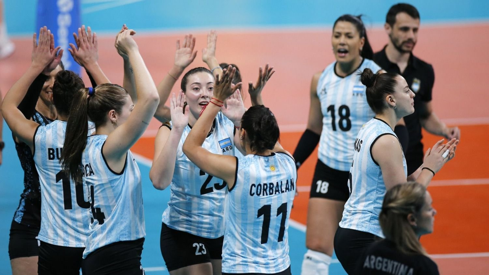

Selección argentina de vóley: a qué juegan Las Panteras hoy vs Dominicana y dónde ver
Página 12 20-10-2023 | 13:30
El seleccionado femenino pasó a semifinales en los Juegos Panamericanos de Santiago 2023, que otorga lugares para los Juegos Olímpicos de París 2024
Seguir leyendo